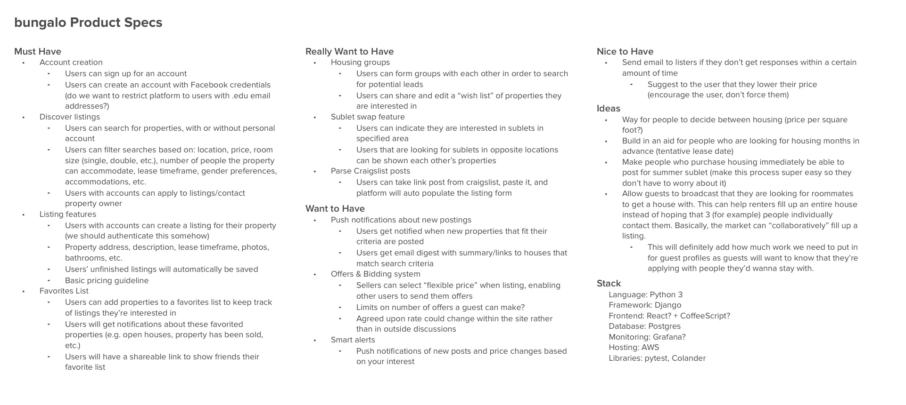
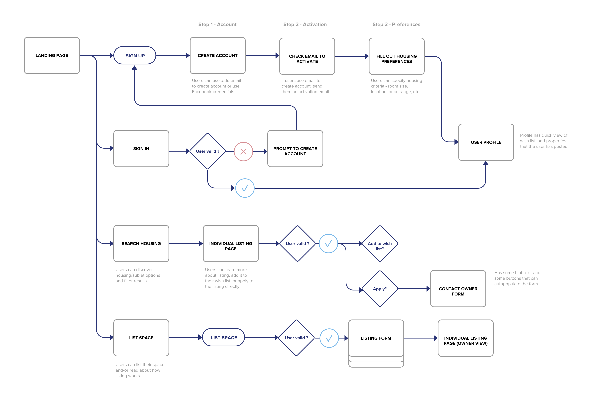
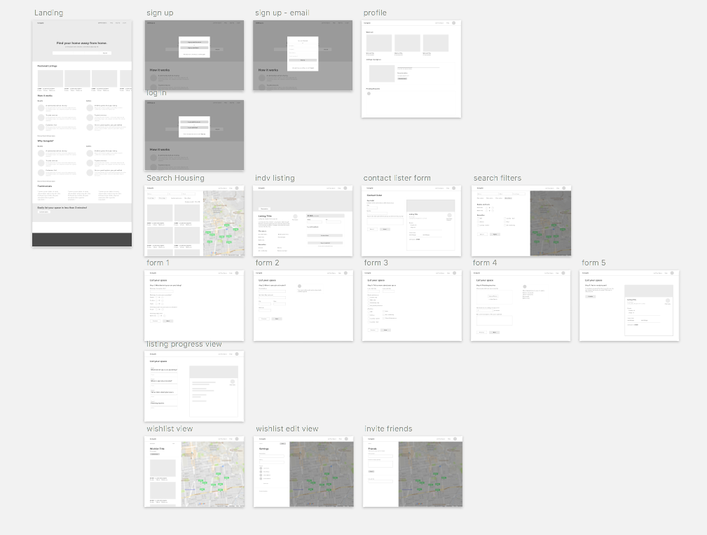
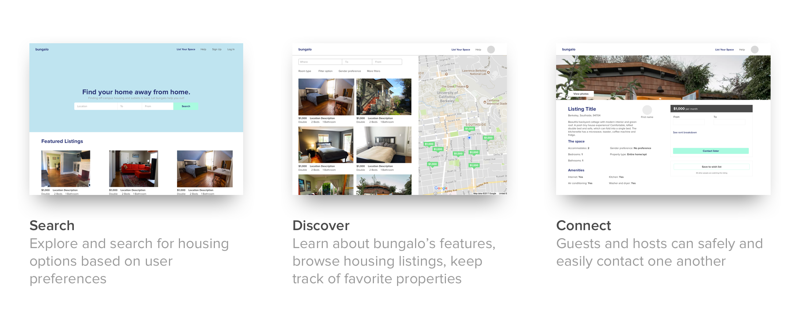

Co-founder/ Product Lead / Frontend Developer, Jul 2017 - Current
Until now, Berkeley students have resorted to inefficient and ineffective means of searching for off-campus housing or subletters for their places during the summer. The latter half of each spring semester is characterized by panic and stressed students.
One day at lunch, my good friend, Sam Hayat, and I were venting about our frustrations with the same problem amidst exams and final project deadlines. We thought that there had to be a better solution.
From these frustrations came bungalo - a web platform with the aim of providing students with an simple and secure way to search for housing and subletters, as well as establishing trust in Berkeley’s college housing market. We are currently being incubated by Free Ventures and The House.
Each spring semester, the inevitable search for off-campus housing rolls around. Unfortunately, there's no centralized place for students to look for their home for the next academic year. Students find themselves buried under countless Facebook posts, Craiglists ads, and Zillow listings. Once people do find housing, often options that are less than ideal, many have to frantically find subletters for the summer if they will be away. The process is messy and stressful to say the least. We wanted to change this.
We wanted our solution to address two main problems:
We started by evaluating our target user demographic and began to define the product. We released a survey (which got over 150 responses within one week) and interviewed 10 friends with various housing and sublet experiences. The survey validated some of our assumptions and also pointed out parts of the housing/sublet experience we hadn't thought about, particularly the group aspect of searching for housing - this would later become a very important insight.
We initially focused on capturing college students (1) on campuses where off-campus housing was popular and (2) students with summer internships in large metropolitan areas.
Once we got market validation, I started to write specs for the platform and began to sketch initial wireframes for the MVP. Throughout this process, I would refer back to notes from user interviews and survey responses to ensure the product was catered to user needs.
Our MVP addresses many pain points that characterize the current search-for-housing experience. First, users will be able to quickly search and filter listings based on user criteria including amenities, gender preference, and property type. Second, people can search for housing with friends and add listings to a shared “wishlist.” Third, users will get notified when new listings that fit their criteria are posted.
Features that would distinguish our platform from competitors:
Before jumping into designs, I put together a general user-flow to help me contextualize each screen and its relationship with the others.
I then put together lo-fi wireframes for the MVP. I focused on the landing page, onboarding, searching, and listing - what would become the foundation for the platform. I spent more time on these wireframes than I typically would because perfecting these aspects of the MVP would be critical to the overall user experience for both use cases (listers and renters).
For example, the "List Your Space" flow took up a significant amount of my time. A delightful listing experience would encourage users to list their space and recommend it to their friends. In the end, I chose a multi-page form rather than a single form. The latter appeared too long and intimidating for users I had shown the mockup to. The multi-page design broke up the listing experience into digestible chunks, making the experience simple and engaging. I also designed the experience so that users could come back to the form if they hadn't already completed it.
We are currently working hard on the MVP and plan to launch in late November - I'd love to chat more about bungalo in person or over the phone!
